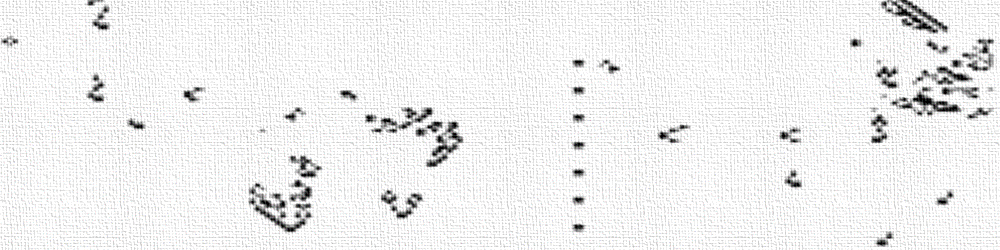
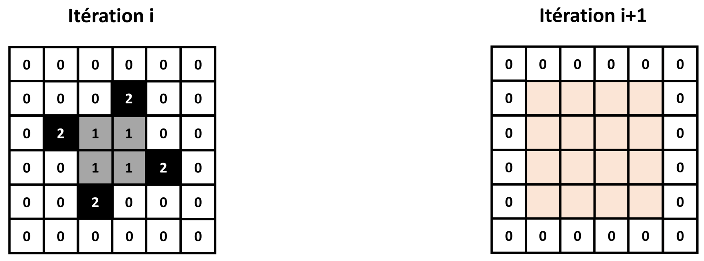
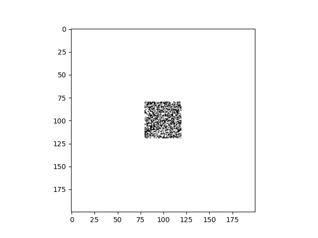

TP examen : sujet de 2025

Lors de cet examen, nous allons programmer un automate cellulaire 2D de type "Brian's brain" en paradigme orienté objet.
Brian's brain
Cet examen portera à nouveau sur un type particulier d'automate cellulaire 2D : Brian's brain.
Imaginé en 1987 par l'informaticien Canadien Brian Silverman, cet automate cellulaire est connu pour son comportement émergent complexe et foisonnant. De nombreuses structures appelées "vaisseaux" se déplacent rapidement sur la grille et s'entrechoquent, pour former d'autres "vaisseaux".
Chaque case de la grille d'un automate "Brian's brain" peut prendre 3 états :
-
Si la case est à 0, elle est considérée comme "morte".
-
Si la case est à 1, elle est considérée comme "mourrante".
-
Si la case est à 2, elle est considérée comme "vivante".
Toutes les cases de l'automate peuvent changer de valeur à chaque itération, en suivant le jeu de règles suivantes, basées sur la valeur de la case et son voisinage de Moore :
-
Si une case a la valeur 2, elle prendra la valeur 1 à l'itération suivante.
-
Si une case a la valeur 1, elle prendra la valeur 0 à l'itération suivante.
-
Si une case a la valeur 0, et qu'elle a 2 voisins à la valeur 2, elle prendra la valeur 2 à l'itération suivante. Sinon, elle restera à la valeur 0.

Brian's brain étant un automate cellulaire "life-like" mais avec une état supplémentaire "mourrant" pour chaque case, on le classe dans la sous-catégorie des automates "generations".
Lors de cet examen, nous allons programmer un automate cellulaire "Brian's brain", sous la forme d'une classe mère commune à tous les automates cellulaire 2D, et d'une classe fille spécifique aux automates "Brian's brain". Nous ferons appel aux notions de programmation orientée objet vues en TP.
N'oubliez pas d'importer Numpy et Matplotlib au début de votre programme !
Définition de la classe mère
Nous allons commencer par définir la classe mère cellular_automaton_2D, qui contiendra les attributs et méthodes communs à tous les automates cellulaires 2D.
Quel est l'intérêt de diviser notre programme en une classe mère et une classe fille ?
Voici la structure de la classe mère que nous allons programmer :
class cellular_automaton_2D():
def __init__(self,grid_size_x,grid_size_y):
#Complétez ici
def set_grid(self,grid):
#Complétez ici
def get_grid(self):
#Complétez ici
def get_grid_size(self):
#Complétez ici
def get_iteration(self):
#Complétez ici
def iterate_grid(self):
#Complétez ici
def display_grid(self):
plt.figure()
plt.imshow(self.grid,cmap='binary')
plt.show()
def save_grid(self):
plt.figure()
plt.imshow(self.grid,cmap='binary')
plt.savefig('automaton_'+str(self.iteration)+'.png')
plt.close()
Vous devrez compléter petit à petit les méthodes de cette classe.
Constructeur
Rappelez le rôle du constructeur ?
Complétez le constructeur :
def __init__(self,grid_size_x,grid_size_y):
#Complétez ici
Il prendra en entrée 2 entiers grid_size_x et grid_size_y contenant les dimensions de la grille de l'automate.
Il initialisera 2 attributs d'instance de la manière suivante :
-
griden utilisant une méthode set_grid, qui prendra en entrée une matrice Numpy 2D ne contenant que des 0 de dimensionsgrid_size_xetgrid_size_y, et que nous programmerons plus tard. -
iterationdirectement initialisé à 0, et qui nous servira à suivre le nombre d'itération pour lequel a tourné l'automate depuis son initialisation.
Comment et quand fait-on appel au constructeur ?
Getters
Quel est le rôle d'une méthode "getter" ?
Complétez la méthode get_grid suivante :
def get_grid(self):
#Complétez ici
Elle devra retourner une copie Numpy de l'attribut d'instance grid.
Cet attribut contiendra la grille de l'automate cellulaire.
Complétez la méhode get_grid_size suivante :
def get_grid_size(self):
#Complétez ici
Elle devra retourner les dimensions de la matrice Numpy contenue dans l'attribut d'instance grid.
Elle renverra donc les dimensions de la grille de l'automate.
Complétez la méthode get_iteration suivante :
def get_iteration(self):
#Complétez ici
Elle devra retourner l'attribut d'instance iteration.
Cet attribut contiendra le nombre d'itérations effectuées par l'automate depuis son initialisation.
Comment récupérer le nombre d'itérations d'une instance automaton de cellular_automaton_2D ?
Setter
Quel est le rôle d'une méthode "setter" ?
Complétez la méthode set_grid suivante :
def set_grid(self,grid):
#Complétez ici
Elle prendra en entrée une matrice 2D Numpy grid, et affectera une copie Numpy de cette matrice à l'attribut d'instance grid.
Comment affecter une matrice Numpy 100x100 ne contenant que des 0 à l'attribut d'instance grid d'une instance automaton de cellular_automaton_2D ?
Itération de l'automate
Les automates cellulaires étant des algorithmes itératifs, tout automate cellulaire 2D a besoin d'une méthode pour être itéré.
Complétez la méthode iterate_grid suivante :
def iterate_grid(self):
#Complétez ici
Elle renverra juste un message d'erreur de type NotImplementedError.
Bizarre, nous avons définit une fonction que ne fait que renvoyer un message d'erreur. Quel est l'intérêt de faire ceci ?
Méthodes d'export
Les 2 méthodes d'exports display_grid et save_grid vous sont déjà fournies.
Vous pouvez les utiliser telles quelles :
def display_grid(self):
plt.figure()
plt.imshow(self.grid,cmap='binary')
plt.show()
def save_grid(self):
plt.figure()
plt.imshow(self.grid,cmap='binary')
plt.savefig('automaton_'+str(self.iteration)+'.png')
plt.close()
Expliquez ce que permettent de faire ces 2 méthodes.
Définition de la classe fille
Nous allons maintenant définir la classe fille brian_brain, qui contiendra les attributs et méthodes spécifiques aux automates "Brian's brain".
Comment Python sait-il qu'il s'agit d'une classe fille de cellular_automaton_2D ?
Voici la structure de la classe fille que nous allons programmer :
class brian_brain(cellular_automaton_2D):
def __init__(self,grid_size_x,grid_size_y):
#Complétez ici
def set_random_grid(self,grid_size_x,grid_size_y):
#Complétez ici
def get_neighbors(self):
#Complétez ici
def iterate_grid(self,nb_iterations):
#Complétez ici
Vous devrez compléter petit à petit les méthodes de cette classe.
Constructeur
Complétez le constructeur :
def __init__(self,grid_size_x,grid_size_y):
#Complétez ici
Elle prendra en entrée 2 entiers grid_size_x et grid_size_y contenant les dimensions de la grille de l'automate.
Elle appellera le constructeur de la classe mère avec les entrées grid_size_x et grid_size_y, puis appellera la méthode set_random_grid avec ces mêmes entrées.
Nous programmerons cette méthode dans la suite.
Getter
Complétez la méthode get_neighbors suivante :
def get_neighbors(self):
#Complétez ici
Elle devra retourner une matrice d'entiers Numpy de même dimensions que grid, contenant pour chaque case le nombre de voisins (voisinage de Moore) "vivants" (à la valeur 2) dans la case de même position dans grid.
Cette méthode nous permettra de déterminer à une itération donnée le nombre de voisins "vivants" de chaque case de la grille, afin de pouvoir lui appliquer les règles de l'automate.
Comment avez-vous choisi de gérer les cas sur les bords ?
Setter
Complétez la méthode set_random_grid suivante :
def set_random_grid(self,grid_size_x,grid_size_y):
#Complétez ici
Elle prendra en entrée 2 entiers grid_size_x et grid_size_y, qui correspondront aux dimensions de la grille voulue pour l'automate.
Elle affectera à l'attribut d'instance grid une matrice Numpy 2D aux dimensions voulues.
Cette matrice aura des 0 partout, sauf dans un carré en son centre qui aura des valeurs aléatoires entre 0 et 2.
Ce carré sera 10 fois plus petit que la matrice.
Cette méthode nous permettra d'initialiser aléatoirement la partie centrale de l'automate.
| Nota Bene |
|---|
| Nous initialiserons de cette manière la matrice 2D de l'automate "Brian's brain" pour permettre de visualiser des motifs : |
| - Trop peu de cases initialisées à 1 ou 2, et l'automate devient rapidement rempli de 0. |
| - Trop de cases initialisées à 1 ou 2, et il devient très difficile de visualer des motifs sur la grille de l'automate. |
| Il s'agit donc ici d'un compromis. |
Itération de l'automate
Nous allons à présent programmer la méthode qui permettra de d'itérer un automate "Brian's brain" un nombre donné de fois. L'idée sera d'appeler dans cette méthode d'autres méthodes programmées précédemment.
Complétez donc la méthode iterate_grid suivante :
def iterate_grid(self,nb_iterations):
#Complétez ici
Pour le nombre entier d'itérations nb_iterations donné en entrée, elle appliquera les règles de "Brian's brain" à la grille de l'automate.
Pour chaque itération, on incrémentera de 1 l'attribut d'instance iteration.
Instanciation et simulation
Ça y est, votre automate cellulaire "Brian's brain" est prêt à tourner !
Faites tourner "Brian's brain" pour 300 itérations, avec une grille de dimensions 200x200. Vous enregistrerez une image PNG de la grille de l'automate à chaque itération.
Si vous regardez les images PNG obtenues, vous devriez voir un comportement similaire à celui-ci :

Imaginons que vous vouliez à présent faire tourner un nouvel automate cellulaire "Brian's brain" avec des dimensions 100x100, pour 50 itérations. Comment feriez-vous ?
Et si vous désiriez programmer un nouvel automate cellulaire 2D, avec des règles différentes de "Brian's brain", comment feriez-vous ?